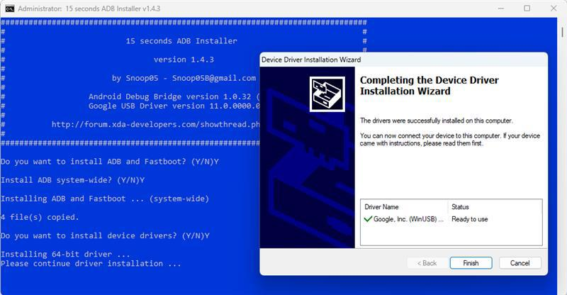
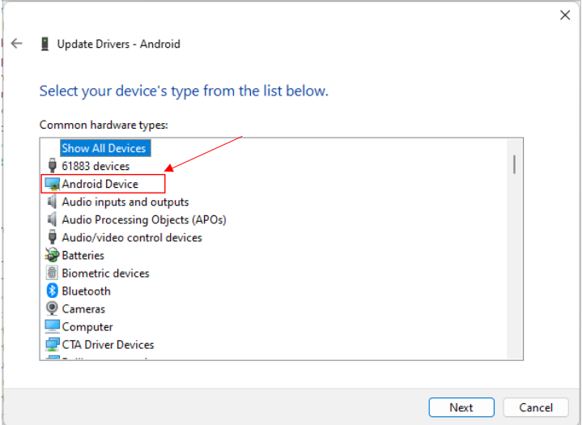
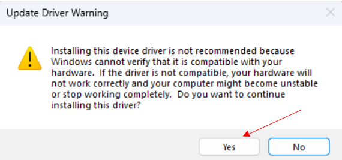

Flashing Guide for Ubuntu OS on I-Pi SMARC RB5 The Ubuntu OS is only for evaluation purposes(Internal use). If it is for commercial use, you need to get a license from Canonical. Canonical’s IP policy can be found here: https://ubuntu.com/embedding/faqs. This document provides detailed information on flashing Ubuntu OS on the I-Pi SMARC RB5. Prerequisites To flash the OS on the I-Pi SMARC RB5, you need a Windows PC (Windows 10/Windows 11). Download the prebuilt Ubuntu image files by clicking here. Download and Install ADB and Fastboot drivers1. Please download the ADB and Fastboot drivers and install them using the link provided below. Android USB Driver ADB Fastboot Tool  Note: If you encounter the “0 Files Copied Error,” download and install the “15_Second_ADB_Installer_v1.3.0” version, as the latest version might not be compatible with your computer’s Windows version. Download QPST Tool and QUALCOMM USB Driver to Flash the Image1. Please download the driver below, USB driver 2. When installing the USB driver, please select the setup type as ETHERNET-DHCP. QPST TOOL 3. Please select Complete during installation as mentioned below. 4. After installing QPST, the Qualcomm Flash Image Loader (QFIL) Tool will be installed on your PC. Please open the QFIL Tool (Search bar -> Application -> QFIL). How to Flash the ImageTo initiate the flashing process for the Ubuntu image, it is essential to first transition the module into Emergency Download (EDL) mode. Once the module is in EDL mode, the Ubuntu image can be flashed using either Qualcomm Flash Image Loader (QFIL) or Android Debug Bridge (ADB). Enter into EDL(Emergency Download) Mode 1. Micro USB. 2. Power jack. 3. UART Pins (See How to Read Console Output). 4. F_DL button (requires removal of the heatsink). 5. Follow these steps to enter into EDL mode. 6. Press the F_DL Key Button on the module 7. Hold the F_DL Key Button and power on the module by connecting the power cable. 8. Release the F_DL Key Button and connect the Micro USB cable. Flashing on Module (QFIL)1. The image being flashed contains the NON HIGH LEVEL OPERATING SYSTEM (NON-HLOS) firmware, boot-loader, kernel, and file-system.2. Please use the QFIL Tool and follow the steps below.3. Make sure image path is short in host PC from drive as below. #windows_Drive:\LEC-RB5-8G--UBUNTU_20_04_xx\LEC-RB5-8G-NON-HLOS-UBUNTU_20_04-xx 4. Enter the module into Download mode (refer to section 2.0 for instructions).After LEC-RB5 Enters into EDL mode -> QFIL Tool will detect LEC-RB5 module as Qualcomm HS-USB QDLoader 9008. 5. Open QFIL Tool ,click Select Port and make sure that the COM port is detected. 6. Choose the Flat build option. 7. In ‘Configuration’ menu, select ‘FireHose Configuration’ and edit the configuration as shown in the image below. 8. Go to the “Browse “ tab. 9. select prog_firehose_ddr.elf 10. Go to “LOAD XML” tab,select all .xml file. 11. Click download.The QFIL start will process and notify download succeed,Once completed Attention: After the image flashed successfully, the target device automatically reset itself. Don't turn off (or) Reset the target device manually. It causes the image packages to break, resulting in the inability to boot. Flashing on Module (QDL, linux-only) This is an alternative to flashing with QFIL, using an open-source tool called Qualcomm Download (QDL). Please note this method only works on Linux. On Ubuntu, qdl can easily be installed using snap: snap install qdl If you prefer to compile the software yourself, the source can be found on the Linaro website: https://git.codelinaro.org/linaro/qcomlt/qdl Open a terminal and navigate to the ufs folder inside the NON-HLOS folder. Make sure the device is in EDL mode Flash the software using the following command: sudo qdl --include ./ --storage ufs ./prog_firehose_ddr.elf rawprogram*.xml patch*.xml The module does not restart automatically. Remove the power and USB cables. Plug in the USB cable before plugging the power cable back in. Your device should now boot into the operating system. Flashing on Module (ADB)13. After this, you can only see the CLI(Command Line Interface). You can install the desktop based on your needs. 14. Login credentials are below, User: adlink Password: adlink123 15. Once installation is completed, we have Ubuntu login on target HDMI. Proceed to log into the Ubuntu Wayland desktop as detailed in 2.3 Logging in to Wayland Desktop. 16. You also need to enable/restart the network manager. For instructions, refer to section 2.4, Enabling the network manager. 2.3 Flashing on Module (ADB) You can skip this section if you prefer to update the entire image using the QFIL tool, as detailed in section 2.1 If you wish to update only the Bootloader, kernel, and Filesystem and not the NON-HLOS firmware, follow the steps below: The image being flashed contains the kernel and file system. Please use the ADB Tool and follow the steps below. 1. Image needed “qti-ubuntu-robotics-image-qrb5165-rb5-boot.img”, “qti-ubuntu-robotics-image-qrb5165-rb5-sysfs.ext4” and “abl.elf”. 2. Image can be found on the path : FHD HDMI : /LEC-RB5-8G–UBUNTU_20_04_xx/LEC-RB5-8G-HLOS-UBUNTU_20_04_xx/LEC-RB5-8G-FHD-UBUNTU_20_04_xx/ 4K HDMI :/LEC-RB5-8G–UBUNTU_20_04_xx/LLEC-RB5-8G-HLOS-UBUNTU_20_04_xx/LEC-RB5-8G-4K-BUNTU_20_04_xx/ 3. Power on the Target board and connect the USB OTG/Micro USB between Target and the Host PC. 4. Open the command prompt. 5. Go to /LEC-RB5-8G–UBUNTU_20_04_xx/LEC-RB5-8G-HLOS-UBUNTU_20_04_xx/LEC-RB5-8G-FHD-UBUNTU_20_04_xx/ (for FHD). 6. Check that the target board (LEC-RB5) was detected using the command below. $ cd /LEC-RB5-8G--UBUNTU_20_04_xx/LEC-RB5-8G-HLOS- UBUNTU_20_04_xx/LEC-RB5-8G-FHD-UBUNTU_20_04_xx/$ adb devices Note: If the "#adb devices” command shows no device, please check your Device Manager for any yellow bang in the Qualcomm USB driver for troubleshooting. Refer section 2.6 7. Enter into ADB mode. $ adb root$ adb reboot bootloader 8. Check module detected. $ fastboot devices Note: If your device is not listed, please check the device manager for yellow bang and update the driver (refer to 2.2.1). 9. Enter into Fastboot mode. $ fastboot flash boot_a qti-ubuntu-robotics-image-qrb5165-rb5-boot.img$ fastboot flash boot_b qti-ubuntu-robotics-image-qrb5165-rb5-boot.img$ fastboot flash system qti-ubuntu-robotics-image-qrb5165-rb5- sysfs.ext4$ fastboot flash abl_a abl.elf$ fastboot flash abl_b abl.elf$ fastboot reboot Attention : After, the image flashed successfully, the target device automatically reset by itself. Don't turn off (or) Reset the target device manually. It causes the image packages to break, resulting in the inability to boot. Troubleshooting Qualcomm USB driver (yellow bang) The driver may have to be manually selected and updated as detailed in the screenshots below. Right click on Android select Update drivers.  The driver is already present in the system at this stage and should be available in the list as ‘Android ADB Interface’. 1. After this, you can only see the CLI(Command Line Interface). You can install the desktop based on your needs.2. Once the desktop is installed, you will see the desktop login page. Select “Ubuntu with Wayland“ and log in to the desktop using the following credentials: User: adlink Password: adlink123 Note: If the ‘Ubuntu with Wayland’ context menu item is not visible, please click on the user icon, and it should pop up. Logging in to Wayland Desktop After updating the image, Ubuntu desktop will be installed automatically. During the installation process, please do not turn off the module. Once the desktop is installed, you will see the desktop login page. Select “Ubuntu with Wayland“ and log in to the desktop using the following credentials: User: adlink Password: adlink123 Note: In case the ‘Ubuntu with Wayland’ context menu item is not visible, please click on the user icon and it should pop-up. Enbling the network managerThe network manager needs to be reinstalled after installing the desktop environment. Follow the below command on the RB5 Ubuntu desktop terminal. It will enable the network manager. $ su $ echo "nameserver 8.8.8.8">>/etc/resolv.conf $ apt reinstall wpasupplicant network-manager -y Erasing image from ModuleTo erase the images on the module, follow the steps below. 1. Check LEC-RB5 detected on the host. $ adb devices 2. Enter the module into ADB mode. $ adb root$ adb reboot bootloader 3. Check module detected on host. $ fastboot devices 4. Run the below command to erase the kernel and filesystem. $ fastboot erase system$ fastboot erase boot_a$ fastboot erase boot_b$ fastboot reboot 2.7 Troubleshooting Qualcomm USB driver (yellow bang) 1. The driver may have to be manually selected and updated as detailed in the screenshots below. 2. Right click on Android select Update drivers. 3. The driver is already present in the system at this stage and should be available in the list as ‘Android ADB Interface’.  4. After updating driver,check adb devices in command prompt. $ adb devices